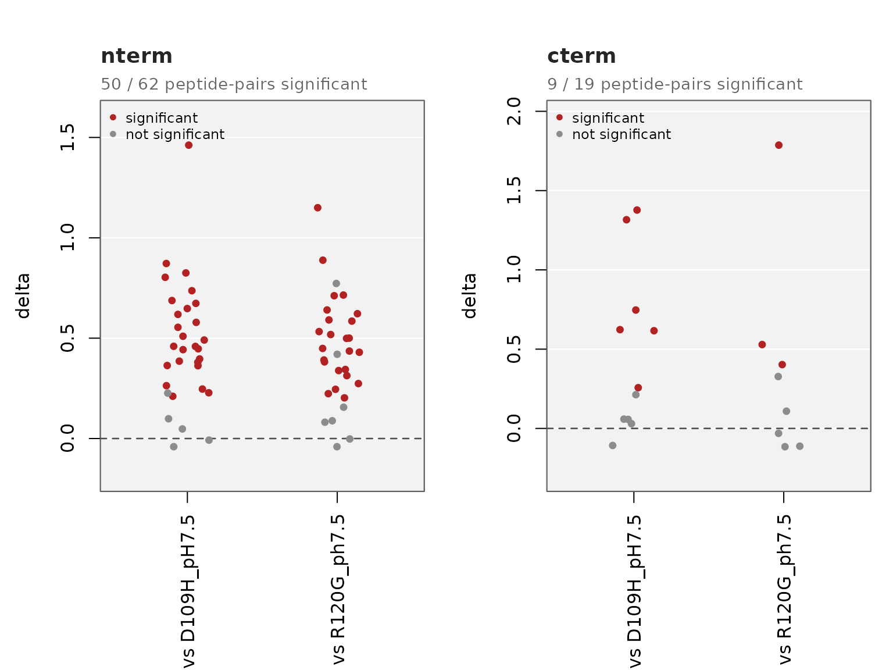
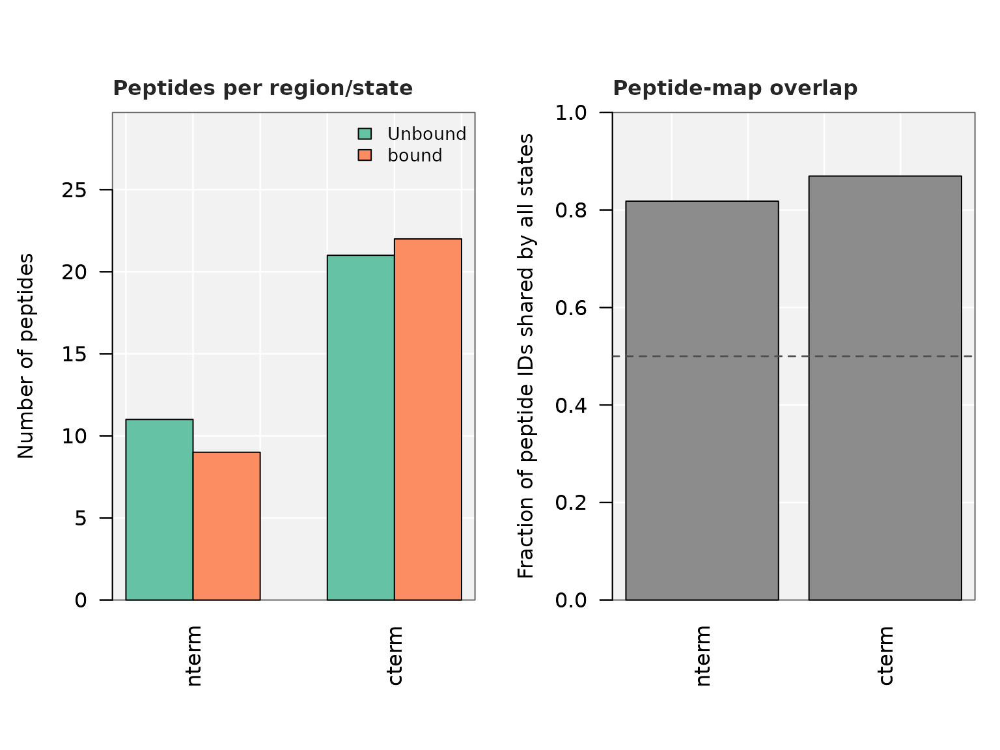
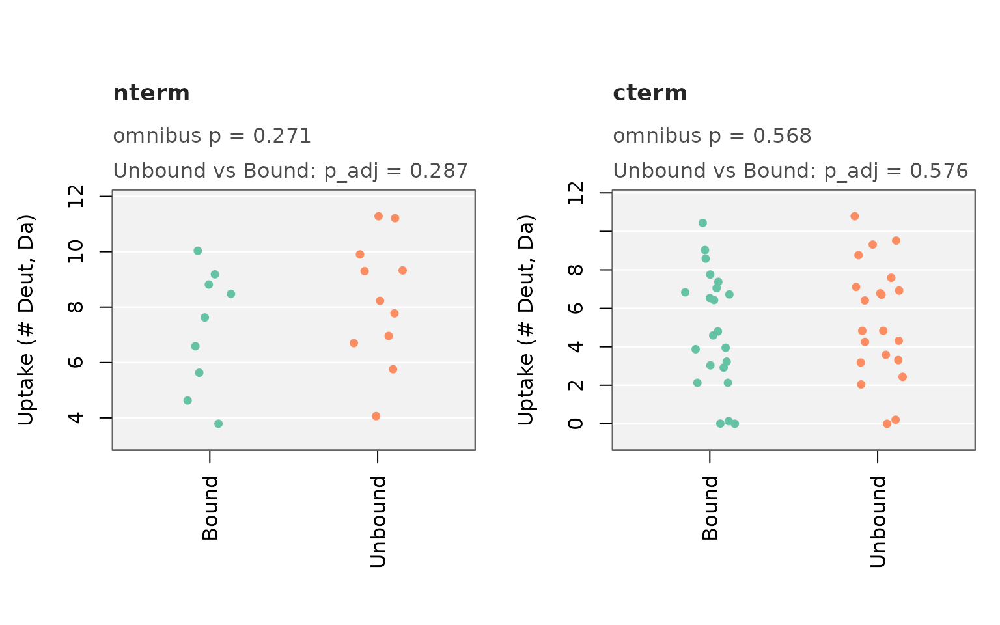
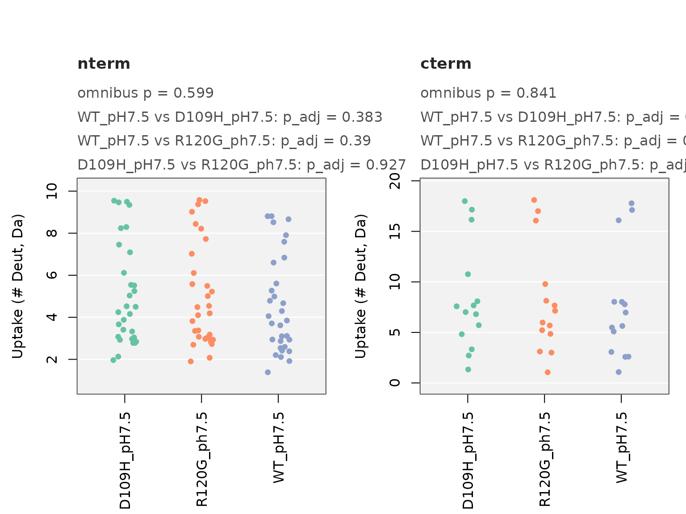

Comparing Three or More States, and Whole Regions
Maria K. Janowska
2026-11-05
Source:vignettes/multistate.Rmd
multistate.RmdThis vignette shows how to compare more than two states, whole
regions, and whole time courses. For data checks, see
vignette("data_quality").
The significance rule
All functions use the same rule (Hageman & Weis, Anal. Chem.
2019): a peptide differs between two states when its Welch t-test
p-value is below pvalue and the difference
is larger than the critical interval (CI).
-
p_adjust = "BH"corrects the p-values for multiple testing. -
percent = "per_residue"divides uptake by the number of exchangeable residues, so peptide length does not affect the result.
Which function for which question
| Function | Question |
|---|---|
compare_states_tp() |
Does this peptide differ between states? (3+ states) |
compare_regions() |
Does this region differ between states? |
compare_states_unmatched() |
Does this region differ, when the states have different peptides? |
compare_timecourse() |
Does this peptide differ over the whole time course? |
residue_regions() |
Which stretches of residues changed? |
For two states at one time point, plot_fissure_vent()
and diff_peptides_prep() are the main tools.
compare_states_tp(): peptides, three or more
states
library(HDXBoxeR)
file_nm <- system.file("extdata", "All_results_table.csv", package = "HDXBoxeR")
file_3state <- system.file("extdata", "three_states.csv", package = "HDXBoxeR")three_states.csv has a wild-type protein and two point
mutants (D109H, R120G), with 3-4 replicates (Woods et al. 2025,
PNAS).
res <- compare_states_tp(file_3state, times = "1800.00s")
#> 22 peptide row(s) dropped: 22 not measured in every state, 0 with fewer than 2 replicate value(s)
#> Number of replicates used: WT_pH7.5=4 D109H_pH7.5=4 R120G_ph7.5=4
#> no csv file written
#> 10 peptide row(s) dropped: 10 not measured in every state, 0 with fewer than 2 replicate value(s)
#> Number of replicates used: WT_pH7.5=4 D109H_pH7.5=4
#> no csv file written
#> 14 peptide row(s) dropped: 14 not measured in every state, 0 with fewer than 2 replicate value(s)
#> Number of replicates used: WT_pH7.5=4 R120G_ph7.5=4
#> no csv file written
#> 20 peptide row(s) dropped: 20 not measured in every state, 0 with fewer than 2 replicate value(s)
#> Number of replicates used: D109H_pH7.5=4 R120G_ph7.5=4
#> no csv file written
head(res)
#> peptide_id Start End Sequence state1
#> 1 1_9_z2_MDIAIHHPW 1 9 MDIAIHHPW WT_pH7.5
#> 2 1_13_z3_MDIAIHHPWIRRP 1 13 MDIAIHHPWIRRP WT_pH7.5
#> 3 1_23_z3_MDIAIHHPWIRRPFFPFHSPSRL 1 23 MDIAIHHPWIRRPFFPFHSPSRL WT_pH7.5
#> 4 1_23_z4_MDIAIHHPWIRRPFFPFHSPSRL 1 23 MDIAIHHPWIRRPFFPFHSPSRL WT_pH7.5
#> 5 1_23_z5_MDIAIHHPWIRRPFFPFHSPSRL 1 23 MDIAIHHPWIRRPFFPFHSPSRL WT_pH7.5
#> 6 2_23_z4_DIAIHHPWIRRPFFPFHSPSRL 2 23 DIAIHHPWIRRPFFPFHSPSRL WT_pH7.5
#> state2 delta p_value ci p_omnibus p_adj
#> 1 D109H_pH7.5 0.09850 7.793244e-03 0.1860082 1.063243e-02 7.793244e-03
#> 2 D109H_pH7.5 0.24650 9.561999e-04 0.1860082 1.420587e-03 9.561999e-04
#> 3 D109H_pH7.5 0.73650 2.157453e-05 0.1860082 4.837629e-05 2.157453e-05
#> 4 D109H_pH7.5 0.68750 9.520933e-04 0.1860082 1.254377e-03 9.520933e-04
#> 5 D109H_pH7.5 0.80325 1.477489e-04 0.1860082 2.465141e-05 1.477489e-04
#> 6 D109H_pH7.5 0.82500 5.675467e-04 0.1860082 1.812711e-04 5.675467e-04
#> p_omnibus_adj is_sig
#> 1 1.063243e-02 FALSE
#> 2 1.420587e-03 TRUE
#> 3 4.837629e-05 TRUE
#> 4 1.254377e-03 TRUE
#> 5 2.465141e-05 TRUE
#> 6 1.812711e-04 TRUEEach row is one peptide and one pair of states.
p_omnibus is a Welch ANOVA across all states. It is given
for information; is_sig uses the rule above for each
pair.
Compare every state to one reference only:
res_ref <- compare_states_tp(file_3state, times = "1800.00s", reference = "WT_pH7.5")
#> 22 peptide row(s) dropped: 22 not measured in every state, 0 with fewer than 2 replicate value(s)
#> Number of replicates used: WT_pH7.5=4 D109H_pH7.5=4 R120G_ph7.5=4
#> no csv file written
#> 10 peptide row(s) dropped: 10 not measured in every state, 0 with fewer than 2 replicate value(s)
#> Number of replicates used: WT_pH7.5=4 D109H_pH7.5=4
#> no csv file written
#> 14 peptide row(s) dropped: 14 not measured in every state, 0 with fewer than 2 replicate value(s)
#> Number of replicates used: WT_pH7.5=4 R120G_ph7.5=4
#> no csv file written
unique(res_ref[, c("state1", "state2")])
#> state1 state2
#> 1 WT_pH7.5 D109H_pH7.5
#> 46 WT_pH7.5 R120G_ph7.5Peptides that cover a mutation have a different sequence in the
mutant. by = "position" matches peptides by position, so
these peptides are compared too:
res_pos <- compare_states_tp(file_3state, times = "1800.00s", reference = "WT_pH7.5", by = "position")
#> Number of replicates used: WT_pH7.5=4 D109H_pH7.5=4 R120G_ph7.5=4
#> no csv file written
#> Number of replicates used: WT_pH7.5=4 D109H_pH7.5=4
#> no csv file written
#> Number of replicates used: WT_pH7.5=4 R120G_ph7.5=4
#> no csv file written
c(by_sequence = nrow(res_ref), by_position = nrow(res_pos))
#> by_sequence by_position
#> 88 100Split by regions:
res_regions <- compare_states_tp(file_3state, times = "1800.00s", reference = "WT_pH7.5",
regions = list(nterm = c(1, 90), cterm = c(91, 175)))
#> 22 peptide row(s) dropped: 22 not measured in every state, 0 with fewer than 2 replicate value(s)
#> Number of replicates used: WT_pH7.5=4 D109H_pH7.5=4 R120G_ph7.5=4
#> no csv file written
#> 10 peptide row(s) dropped: 10 not measured in every state, 0 with fewer than 2 replicate value(s)
#> Number of replicates used: WT_pH7.5=4 D109H_pH7.5=4
#> no csv file written
#> 14 peptide row(s) dropped: 14 not measured in every state, 0 with fewer than 2 replicate value(s)
#> Number of replicates used: WT_pH7.5=4 R120G_ph7.5=4
#> no csv file written
table(res_regions$region)
#>
#> cterm nterm
#> 19 62
plot_compare_states_tp(res_regions, plot_type = "jitter")
Every peptide is shown; significant ones are colored.
plot_type = "box" or "violin" adds a summary
shape.
compare_regions(): a whole region
compare_regions() tests whether the states differ in a
region. Each peptide is its own control: the model is
uptake ~ peptide + state on the peptide averages. For two
states this is a paired t-test of the peptide differences. The peptides
must be found in every state.
reg <- compare_regions(file_nm, times = "1800.00s",
regions = list(nterm = c(1, 100), cterm = c(101, 225)))
reg$summary
#> region Deut.Time n_peptides n_obs F_state df_state df_resid p_state
#> 1 nterm 1800.00s 9 54 4.012432 1 8 0.08012977
#> 2 cterm 1800.00s 20 120 17.078329 1 19 0.00056602
#> p_state_adj p_state_x_peptide
#> 1 0.08012977 7.621526e-28
#> 2 0.00056602 2.886840e-24
reg$pairs
#> region Deut.Time state1 state2 estimate se p_value p_adj
#> 1 nterm 1800.00s Unbound bound -0.3596296 0.17953604 0.08012977 0.08012977
#> 2 cterm 1800.00s Unbound bound -0.2543000 0.06153521 0.00056602 0.00056602-
p_state: do the states differ in this region? -
p_state_x_peptide: does the difference change from peptide to peptide? If yes, the effect is local - look at the single peptides. -
estimate: the average difference per peptide (state2 - state1).
Here cterm differs clearly (p = 0.0006). nterm is borderline (p = 0.08): some of its peptides change and some do not.
All time points in one model, with a test for state x time:
compare_regions(file_nm, regions = list(nterm = c(1, 100), cterm = c(101, 225)),
time_model = TRUE)$summary
#> region Deut.Time n_peptides n_obs F_state df_state df_resid p_state
#> 1 nterm all 9 216 27.24280 1 35 8.257467e-06
#> 2 cterm all 20 480 49.85344 1 79 5.718792e-10
#> p_state_adj p_state_x_peptide p_state_x_time
#> 1 8.257467e-06 1.578649e-20 0.0277035
#> 2 5.718792e-10 1.544159e-51 0.3810325
compare_states_unmatched(): different peptides in the
states
Use this function when the states do not share the same peptides. All
peptides in a region are pooled per state, and the states are compared.
regions is required.
res_unmatched <- compare_states_unmatched(file_nm, times = "1800.00s",
regions = list(nterm = c(1, 100), cterm = c(101, 225)))
res_unmatched$summary
#> region state1 state2 n_peptides_tested n_peptides_significant
#> 1 nterm Unbound bound 9 5
#> 2 cterm Unbound bound 19 6
#> frac_peptides_significant n1 n2 shift_hl ci_low ci_high p_value p_omnibus
#> 1 0.5555556 11 9 -1.0886667 NA NA 0.2874954 0.2706274
#> 2 0.3157895 21 22 -0.3056667 NA NA 0.5762709 0.5680073
#> p_adj
#> 1 0.2874954
#> 2 0.5762709
res_unmatched$coverage
#> region state n_peptides mean_length frac_shared_all_states
#> 1 nterm Unbound 11 15.72727 0.8181818
#> 2 nterm bound 9 14.22222 0.8181818
#> 3 cterm Unbound 21 12.33333 0.8695652
#> 4 cterm bound 22 12.09091 0.8695652Read the first columns first: frac_peptides_significant
is the fraction of the shared peptides that differ by the rule above.
The pooled test after it is only approximate.
Here the pooled test is not significant (p = 0.29 and 0.58), but 5/9 nterm peptides and 6/19 cterm peptides differ. A non-significant pooled result does not mean nothing changed.
frac_shared_all_states in coverage is the
fraction of peptides found in every state. If it is low, a difference
can come from different peptides rather than different exchange.
plot_coverage_diagnostics(res_unmatched)
plot_compare_states_unmatched(res_unmatched, plot_type = "jitter",
state_labels = c(Unbound = "Unbound", bound = "Bound"))
More than two states work the same way, and the mutant peptides are included:
res3_unmatched <- compare_states_unmatched(file_3state, times = "1800.00s",
regions = list(nterm = c(1, 90), cterm = c(91, 175)))
plot_compare_states_unmatched(res3_unmatched, plot_type = "jitter")
Options:
## values: uptake in Da (default), percent, or uptake per exchangeable residue
compare_states_unmatched(file_nm, times = "1800.00s", regions = list(nterm = c(1, 100)), value = "frac_deut")
## methods: "peptide" (default), "resample" (permutation p-values and bootstrap CI),
## "classic" (every replicate pooled; only to reproduce old analyses)
compare_states_unmatched(file_nm, times = "1800.00s", regions = list(nterm = c(1, 100)),
method = "resample", seed = 1)
compare_timecourse(): the whole time course
compare_timecourse() judges each peptide on all time
points together. It gives the summed difference over time with its own
CI, and the number of time points where the peptide is significant.
tc <- compare_timecourse(file_nm, "Unbound", "bound")
head(tc[order(tc$p_value), c("Start", "End", "summed_delta", "p_value", "ci_sum",
"sig_summed", "n_timepoints_sig")])
#> Start End summed_delta p_value ci_sum sig_summed n_timepoints_sig
#> 12 98 115 -5.240667 3.667852e-14 0.3434353 TRUE 4
#> 11 95 115 -4.834667 1.280392e-11 0.3434353 TRUE 4
#> 17 136 147 -3.690667 1.398322e-11 0.3434353 TRUE 3
#> 9 89 97 -3.061000 1.509051e-11 0.3434353 TRUE 3
#> 21 169 177 -1.020333 1.900268e-11 0.3434353 TRUE 2
#> 7 78 88 -1.439000 1.945552e-11 0.3434353 TRUE 1Robot plots can show only peptides significant at two or more time
points: robot_plot_All(..., min_timepoints = 2).
residue_regions(): stretches of residues
residue_regions() finds stretches of residues that
changed in the same direction. A residue is included when at least
min_peptides (default 2) significant peptides cover it. The
effect is given per exchangeable residue.
a_da <- output_tp(file_nm)
#> Protein.States used: Unbound bound
#> Deut.times used: 3.00s 60.00s 1800.00s 72000.00s
#> 29 peptide row(s) dropped: 29 not measured in every state, 0 with fewer than 2 replicate value(s)
#> Number of replicates used: Unbound=3 bound=3
#> no csv file written
rr <- residue_regions(a_da, state1 = "Unbound", state2 = "bound", times = "1800.00s")
rr
#> direction region_start region_end n_residues n_peptides
#> 1 protected 62 63 2 2
#> 2 protected 95 124 30 6
#> mean_per_residue_delta pooled_CI_Da
#> 1 -0.07548611 0.2392609
#> 2 -0.04715929 0.2392609Check the regions against your own domains:
residue_regions_subset_summary(rr, regions = list(nterm = c(1, 100), cterm = c(101, 225)))
#> subset n_residues n_residues_significant frac_significant
#> 1 nterm 100 8 0.080
#> 2 cterm 125 24 0.192
#> n_regions_overlapping directions
#> 1 2 protected
#> 2 1 protected